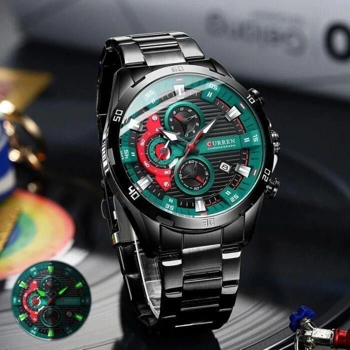
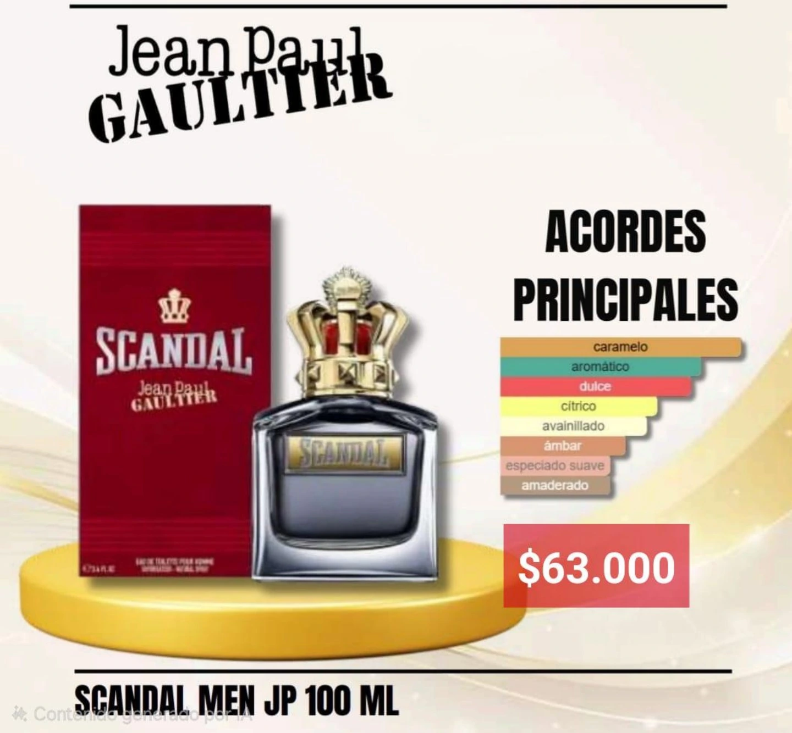
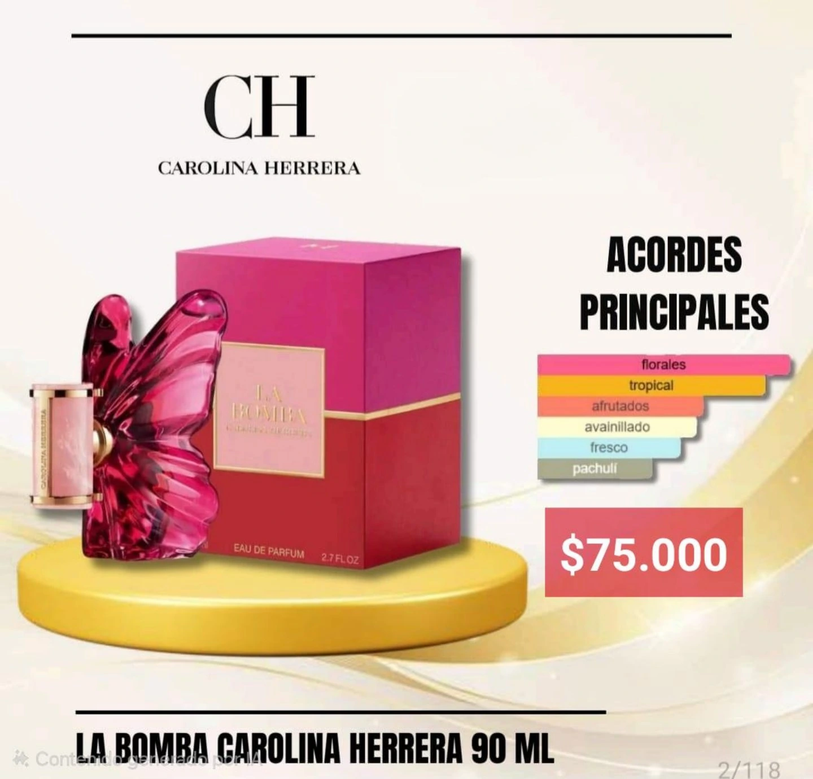
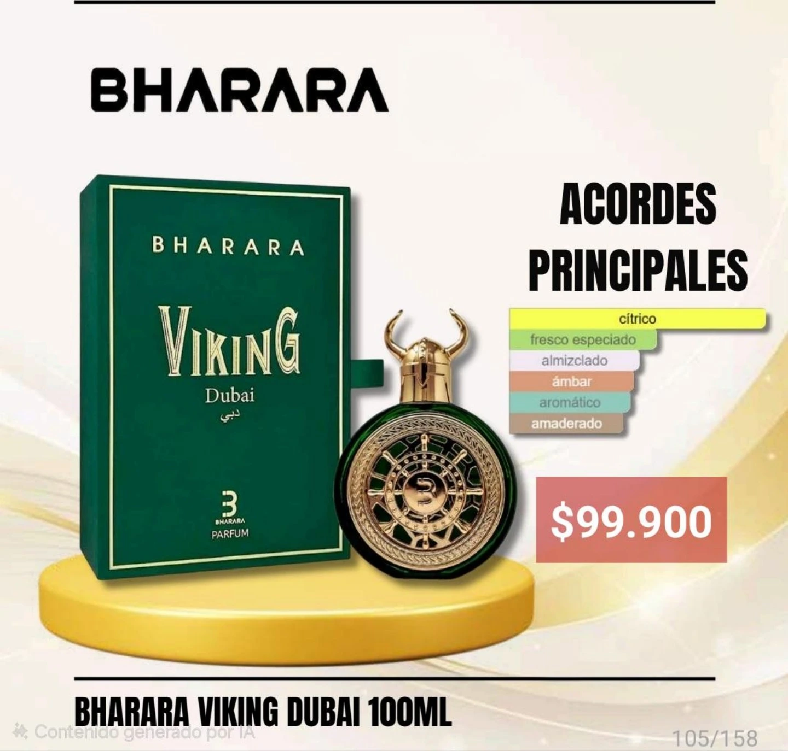

FLOKAM
Cuidado capilar especializado para rutinas de limpieza del cuero cabelludo con descamación, oleosidad o sensación de desequilibrio.
Consulta las referencias disponibles, notas rápidas por familia y datos útiles para organizar próximos catálogos en la misma tienda.
Cuidado capilar especializado para rutinas de limpieza del cuero cabelludo con descamación, oleosidad o sensación de desequilibrio.

Accesorios de uso diario, regalo y estilo personal. Buen formato para contenido visual y ventas por impulso.

Referencias para uso personal, oficina, salidas y regalo. Las imágenes conservan acordes para orientar al cliente.

Opciones para regalo, ocasión especial y rutina diaria. Útiles para publicar por estilo aromático y presentación.

Fragancias de presencia intensa, buena recordación visual y referencias llamativas para clientes que buscan novedad.
0 referencias disponibles